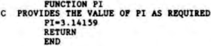

Scorpio News |
January–March 1987 – Volume 1. Issue 1. |
| Page 14 of 63 |
|---|
This is not the the DATA statement in a BASIC program. The function in Fortran is to allow the programmer to set up initial values for variables before program execution occurs. For example, the value of frequently used constants could be initialised in this way:
DATA PI/3.142/,BEANS/5.0/.....
Im each case the variable name is followed by a solidus (/), the value of the variable, another solidus and separated from the next name by a comma.
It is most important, particularly with type declarations and array declarations, to ensure that these are put in in the correct sequence before ANY executable program statements.
A suitable order for most Fortran versions is:
REAL
INTEGER
Double Precision
LOGICAL
DIMENSION
COMMON
EXTERNAL
EQUIVALENCE
DATA
.
. (executable statements)
.
END
This applies co both main program and all subroutine will be required for most progcams (hank goodness!).
These are program sub-units which are called by the main program as required. They do not occur in precisely the same form in most versions of (where the GOSUB…RETURN statements have an approximately similar operation) – BBC BASIC uses PROCeduces which are a closer approximation. There is an essential difference between Subroutines and Functions in the way the main program uses them, the Subroutine is CALLed by name using the CALL statement and when the program statements contained in it have been processed, control is passed back to the gain program by means of a RETURN statement. Typical uses for a subroutine are where a series of tables have to be set up or where graphical data has to be displayed or a complicated expression has to be evaluated. Functions are used differently. The function name appears as one of the variables in an assignment statement and the value of the function (at calculated) is used in the evaluation of the assignment. For example, if the value of pi is required for some calculations involving the area or circumference of a circle and the version of Fortran you are using does not supply this as one of its intrinsic functions, then a Function subprogram could be written to provide it (only a dodo would actually do this but it is a good illustration!):
| Page 14 of 63 |
|---|